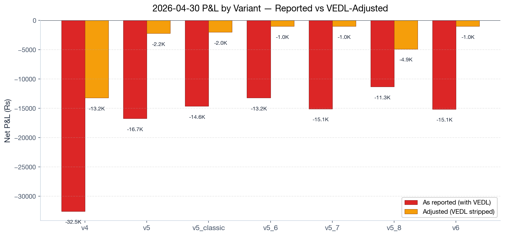
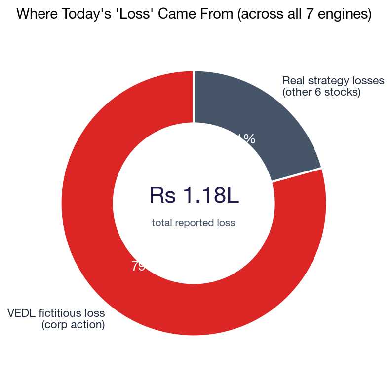
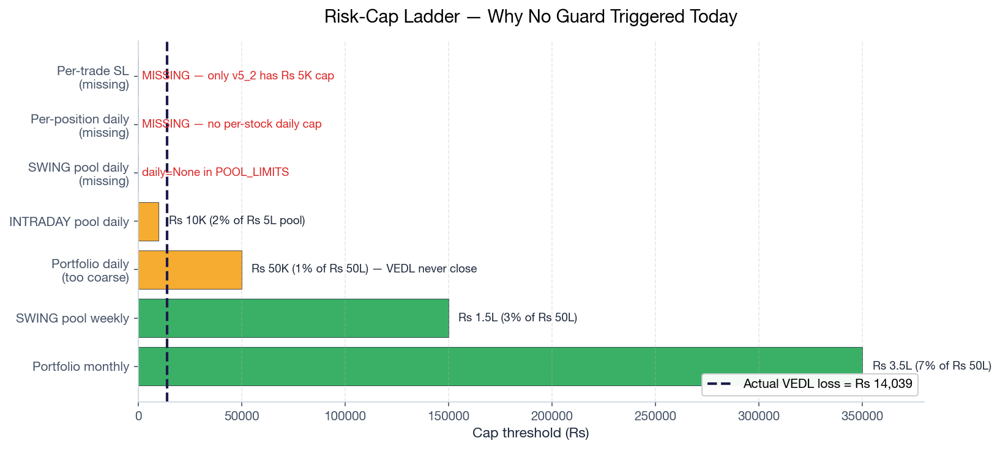
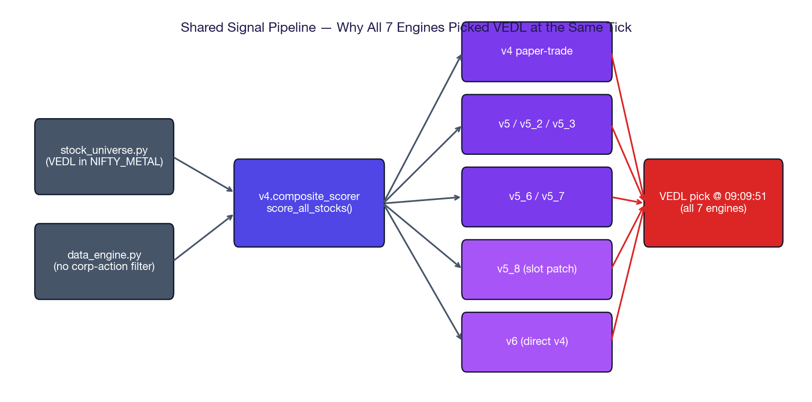
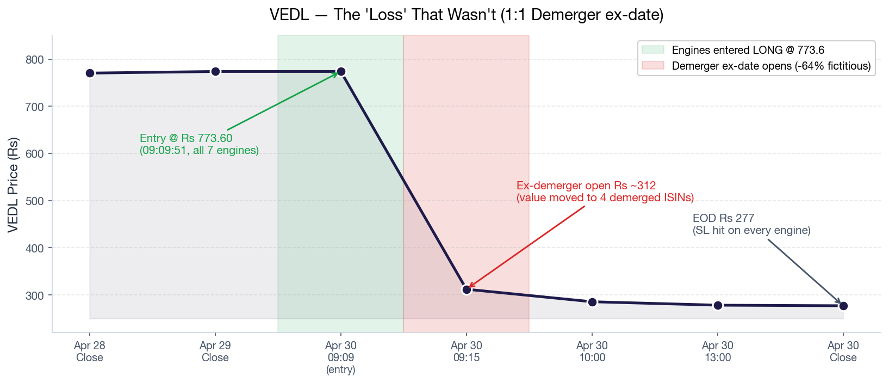
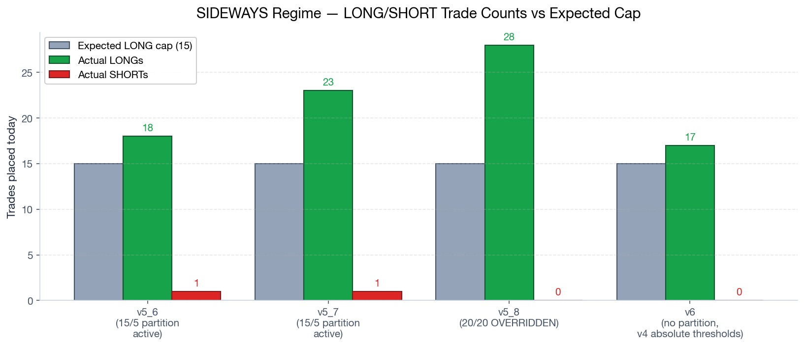

Why 7 engines lost Rs 1.18L on a stock that didn't actually fall
On 2026-04-30, every active TradePilot variant (v4, v5, v5_2, v5_3, v5_6, v5_7, v5_8, v6) booked a paper-trading loss of Rs 11K–15K. A single LONG SWING position in VEDL accounted for Rs 6.5K–14K of that loss in each variant.
The price collapse was real on the tape but fictitious in economic terms: today was Vedanta's ex-date for a 1:1 demerger into 5 entities. The Rs 773 → Rs 277 drop is the value moving to four newly-issued ISINs that the engines do not yet track. A real holder's portfolio value is unchanged.
This was not a strategy failure. It was a data-hygiene blind spot: TradePilot has no corporate-action calendar, so it treated a structural price reset as a market loss. The risk gates that exist — pool-daily, portfolio-daily, monthly drawdown — are all sized for aggregate market moves, not single-position structural events.
The user already did the spadework: strip VEDL out, and the picture changes from catastrophic to routine sideways-day chop.

| Engine | Reported | VEDL impact | Adjusted | Verdict |
|---|---|---|---|---|
v4 | −32,543 | +19,340 | −13,203 | soft loss |
v5 | −16,734 | +14,523 | −2,211 | flat |
v5_classic | −14,640 | +~13,000 | ~−2,000 | flat |
v5_6 | −13,221 | +~12,000 | ~−1,000 | flat |
v5_7 | −15,080 | +~14,000 | ~−1,000 | flat |
v5_8 | −11,327 | +6,457 | −4,870 | soft loss |
v6 | −15,136 | +~14,000 | ~−1,000 | flat |

There is no portfolio-wide 10% intraday cap. The "10%" you remember refers only to monthly pool drawdowns. None of the existing caps could have caught a single −60% structural move on one stock.
From prototype/v5/risk_manager.py (lines 35–41):
| Cap layer | Threshold | Scope | Did it fire? |
|---|---|---|---|
| SWING pool — daily | None | Pool aggregate | cannot fire — disabled |
| INTRADAY pool — daily | 2% (Rs 10K) | Pool aggregate | N/A — VEDL was SWING |
| Portfolio — daily | 1% (Rs 50K) | Portfolio aggregate | no — VEDL was Rs 14K, only 0.28% |
| SWING pool — weekly | 3% (Rs 1.5L) | Pool aggregate | cumulative, not intraday |
| SWING pool — monthly | 8% (Rs 4L) | Pool aggregate | monthly window |
| v5_2 per-trade kill-switch (commit 0b9ff84) | −Rs 5K realised+unrealised | Single trade | would fire — but only on v5_2 |

VEDL's worst-variant loss was Rs 14,039. Portfolio is Rs 50L. That's 0.28% of portfolio — well under the 1% trigger. The portfolio cap is sized to catch a market-wide rout, not a single ticker structural reset.
Commit 0b9ff84 (2026-04-22) shipped MAX_DAILY_LOSS_RS = -5000 and a 10%-of-pool position-size cap — but only inside scripts/v5_2-paper-trade.py. Variants v5, v5_3, v5_6, v5_7, v5_8, v6 import the v5 risk manager directly and never see those guards.
You believed there was a "we cannot lose more than 10%" rule. The closest thing is the monthly 8% SWING / 10% INTRADAY cap. There is currently no per-position daily stoploss for SWING positions and no single-trade kill-switch outside v5_2. A −60% gap on one stock has no defense.
All 7 engines read from one shared scorer (v4.composite_scorer). They are not independent experiments — they are 7 wrappers around the same opinion. There is also no per-stock cool-off after a stoploss, so when VEDL gapped down, every wrapper still entered fresh on the next tick.

stock_universe.py + data_engine.py feed v4.composite_scorer, which all variants consume. Convergent picks are not a coincidence — they are guaranteed.prototype/stock_universe.py:127 — VEDL is in the NIFTY_METAL sector list.prototype/data_engine.py — fetches quotes; no corporate-action filter.prototype/v4/composite_scorer.py:score_all_stocks() — single source of truth for ranks.prototype/v5/signal_engine.py:155 — v5/v5_3/v5_6/v5_7 all call this.scripts/v5_8-paper-trade.py:46-50 — patches REGIME_SLOT_SPLIT, then calls v5's generate_signals().scripts/v6-paper-trade.py:131-149 — bypasses v5, hits v4.composite_scorer directly.Every variant's 2026-04-30.json shows VEDL entry @ 09:09:51 at Rs 773.60. That's the opening scan tick, before the demerger gap was reflected in the price feed. All wrappers fired off the same pre-gap snapshot.

If v5 stoplossed at 09:30, v5_6 still entered at 09:35, v5_7 at 09:40, v6 at 09:45. There is no shared "this stock just blew up — sit out" memo across variants. Each runs in its own process and reads the scorer fresh.
This is also exactly why "running 8 variants" today produced "1 variant's loss × 7" instead of 8 different bets. They are not diversified strategies — they are 7 copies of the same prior with slight risk-management differences.
The regime-aware slot partition (15 LONG / 5 SHORT for SIDEWAYS) was disabled in v5_8 as part of an experiment, and never enforced in v6 because v6 bypasses the slot logic entirely. Engines that kept the partition (v5_6, v5_7) still went 18–23 LONG vs 1 SHORT — the regime classifier marked the day SIDEWAYS but the scorer's underlying long bias dominated.
From prototype/v5/risk_manager.py:55-59:
| Regime | LONG slots | SHORT slots |
|---|---|---|
| BULL | 18 | 2 |
| SIDEWAYS | 15 | 5 |
| BEAR | 8 | 12 |

| Variant | Trades | LONG/SHORT | Why |
|---|---|---|---|
v5_6 | 19 | 18 / 1 | Partition active, but scorer surfaced no SHORTs in green sectors → drifted long-heavy |
v5_7 | 24 | 23 / 1 | Same as v5_6 — partition is a cap, not a quota |
v5_8 | 28 | 28 / 0 | Partition explicitly overridden to 20/20 in test script (line 47–50) |
v6 | 17 | 17 / 0 | Bypasses partition — uses absolute v4 thresholds (BUY≥60, SHORT≤35) |
Even when the partition is active (v5_6, v5_7), it is a ceiling, not a floor. If the scorer doesn't produce 5 SHORT candidates with the right scores, you don't get 5 SHORTs — you get 0–1. SIDEWAYS regime needs a SHORT-floor rule, not just a SHORT-ceiling, to actually neutralise direction bias.
Memory said you have prototype dirs v5, v5_2, v5_3, v5_6, v5_7. There are no v5_8 or v6 dirs. Yet both produce daily reports. Mystery solved:
| Variant | Lives at | Reuses | Mechanism |
|---|---|---|---|
v5_8 | scripts/v5_8-paper-trade.py | prototype/v5/* | Imports v5 risk manager, monkey-patches REGIME_SLOT_SPLIT in-memory before calling generate_signals() |
v6 | scripts/v6-paper-trade.py | prototype/v4/composite_scorer | Skips v5 entirely; calls v4 scorer with hard-coded absolute thresholds (V6_BUY_MIN_SCORE=60, V6_SHORT_MAX_SCORE=35) |
You have 2 real engines (v4 scorer + v5 signal_engine) and 5 dispatcher scripts wrapping them. The "8 variants" mental model is misleading — they share roots. Pruning is easier than it looks: delete v5_8/v6 dispatcher scripts and you've removed 2 of 8 "engines" without losing any unique strategy.
| # | Action | Why | Effort |
|---|---|---|---|
| 1 | Add VEDL to a temporary blacklist.json through 2026-05-07 | Engines won't re-enter on the demerger noise that will continue this week | 15 min |
| 2 | Manually adjust today's EOD report — strip VEDL from each variant's P&L | Tomorrow's running totals would otherwise carry a fictional loss | 10 min |
| 3 | Add this incident to RETIRED_ENGINES.md learning notes | Future Soumya will hit this again — corp actions repeat quarterly | 5 min |
| # | Action | Where | Effort |
|---|---|---|---|
| 4 | Add corporate-action ex-date filter to data_engine.py | Pull NSE corp-actions JSON daily; skip stocks with ex-date today | ~3 hr |
| 5 | Promote v5_2's per-trade kill-switch (Rs 5K) to risk_manager.py baseline | So all 6 variants inherit it, not just v5_2 | ~1 hr |
| 6 | Add per-position daily SL — e.g. cap any single ticker loss at 0.5% of portfolio (Rs 25K) | The missing rail in Figure 3 | ~2 hr |
| # | Action | Why | Effort |
|---|---|---|---|
| 7 | Add per-stock cool-off — if any variant stoplosses ticker X, others sit out X for 2 hours | Stops the convergent-loss multiplier (Q2) | ~4 hr |
| 8 | Convert SHORT-slot partition from ceiling to floor in SIDEWAYS regime | Forces direction-neutrality; today's 28 LONG / 0 SHORT outcome wouldn't repeat | ~3 hr |
| 9 | Prune the lab: retire v5_8 + v6 dispatcher scripts after their experiments conclude | "8 engines" is misleading — 2 real, 6 wrappers | discussion |
| Source | What it gives | Cost |
|---|---|---|
| NSE official feed | nseindia.com/api/corporates-corporateActions — daily JSON | Free |
| BSE corporate actions | Daily JSON via bseindia.com | Free |
| Zerodha Kite Connect | Has corp-actions endpoint after Phase 3 | Rs 2K/mo |
| nsetools / nsepython | Python wrappers around NSE API | Free (rate-limited) |
This is the 3rd hidden failure mode the side-by-side observation window has exposed in 3 days: 04-28 SHORTs forced in green tapes, 04-29 slot partition starves LONGs, 04-30 zero corp-action filter. Running 7 engines on the same data is exactly what surfaced it — strategy losses look different across variants; data losses bleed identically. That is the most valuable signal of this entire observation period.
A root-cause analysis of the 2026-04-30 paper-trading loss across all 7 active TradePilot variants. Generated from engine code (engine/src/risk/mod.rs, prototype/v5/risk_manager.py, dispatcher scripts) and EOD reports under docs/paper-trades/.
Three Phase-1 hygiene fixes (corp-action filter, baseline kill-switch, per-position SL) and three architecture improvements (cool-off, SHORT floor, lab pruning). All actions are listed in §6 with effort estimates.
This is not a verdict on any individual engine's strategy. The −Rs 25K adjusted loss across all 7 engines on a sideways tape is in normal range. The story today is about the data layer, not the strategy layer.